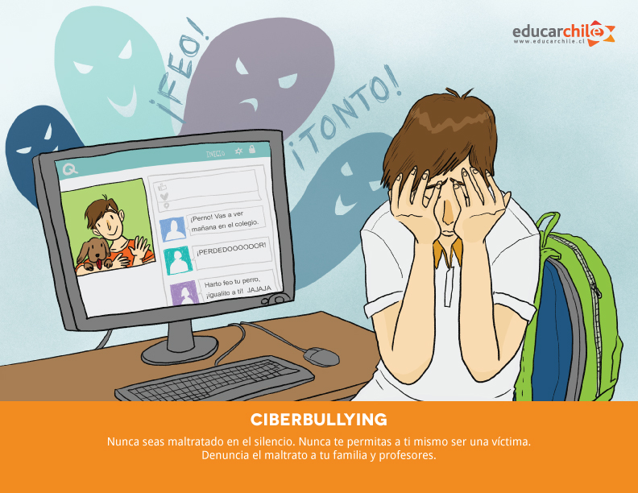

Exposição Excessiva de Informações Pessoais
Compartilhar informações demais pode levar a riscos de privacidade e segurança.
Ciberbullying
O ciberbullying pode causar sérios problemas emocionais e psicológicos.

Vazamento de Dados
As redes sociais são alvos frequentes de hackers, o que pode resultar em vazamentos de dados.
Dependência e Impacto na Saúde Mental
O uso excessivo de redes sociais pode levar à dependência e afetar negativamente a saúde mental.
Fake News e Desinformação
As redes sociais são um canal para a disseminação de informações falsas e desinformação.